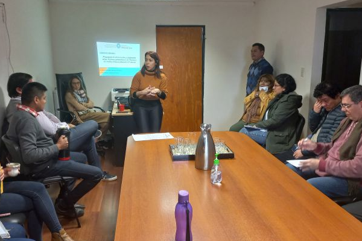

Transformando Comunidades a Través del Trabajo Social
Descubre cómo el trabajo social influye en el bienestar de las comunidades, centrándose en el estudio de la población, las responsabilidades de los agentes del Estado y el impacto de la planificación estratégica.
Acompáñanos en la comprensión de cómo la colaboración entre trabajadores sociales y comunidades impulsa el desarrollo social sostenible.
Video: Transformación Social
Mira este video para entender cómo el trabajo social está transformando vidas en diferentes comunidades.
La Población: Un Enfoque desde el Trabajo Social
El estudio de la población en trabajo social no solo analiza cifras demográficas, sino también la calidad de vida, las oportunidades y los desafíos que enfrentan diferentes grupos dentro de la sociedad.
Obligaciones de los Agentes del Estado

Los agentes del estado juegan un papel crucial en el desarrollo social. Desde la creación de políticas públicas hasta la implementación de programas sociales, es su responsabilidad garantizar que todos los ciudadanos tengan acceso a servicios básicos como salud, educación y vivienda.
Implicaciones de la Planificación y Desarrollo Social
La planificación juega un papel fundamental en el desarrollo social. Sin una estrategia clara y bien estructurada, los esfuerzos por mejorar la calidad de vida de una comunidad pueden ser insuficientes o ineficaces.